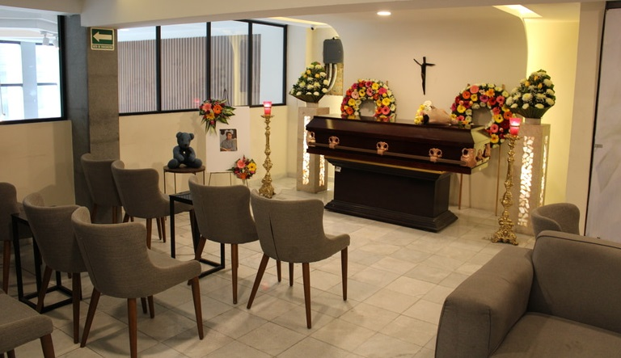

Conócenos
Nuestro objetivo es ofrecer un servicio integral, humano y profesional, apoyando en cada paso del proceso de despedida.

Confianza y respeto en cada despedida
Nuestro objetivo es ofrecer un servicio integral, humano y profesional, apoyando en cada paso del proceso de despedida.
Nuestro servicio de floristería ofrece arreglos florales elegantes y personalizados, creando homenajes llenos de cariño que transmiten respeto y afecto en cada detalle.
Contamos con una amplia variedad de ataúdes de calidad, adaptados a diferentes gustos y necesidades, para honrar la memoria de sus seres queridos con dignidad y cuidado.